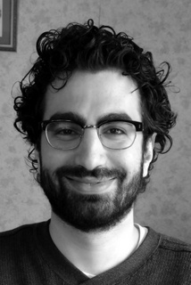

 |
Constantine Lignos Email: c...@lignos.org Details: ConstantineLignos on Github, @ConstantineLig, ResearchGate My research explores the computational structure of language from a fundamentally interdisciplinary perspective. I work on projects in many domains, including traditional natural language processing, human language acquisition and processing, and language variation and change. I create simple, interpretable computational models by taking advantage of findings from theoretical linguistics, psycholinguistics, and language acquisition. I did my graduate work in Computer Science at The University of Pennsylvania (Ph.D. 2013), advised by Mitch Marcus and Charles Yang. I then completed a post-doctoral fellowship at The Children's Hospital of Philadelphia exploring clinical applications of statisical models of language processing, working with Tim Roberts. Frequent collaborators include Jonathan Brennan, Kyle Gorman, Laurel MacKenzie, Hilary Prichard, and Vasu Raman. |
Representative publication: Infant
word segmentation: An incremental, integrated model
In the first years of life, children learn to segment the speech
stream into words and the morphemes they are built from. This problem
is similar to the NLP task of unsupervised
language learning, and my research in this area develops learning
methods that are computationally efficient, cognitively plausible, and
predict the ways in which infants learn over time.
Representative publication: Revisiting frequency
and storage in morphological processing
I use computational modeling to extend experimental work by
evaluating theories of processing morphologically complex words using
large scale data. My work focuses on the debate surrounding the role
of frequency in facilitating processing and the nature of
morphological decomposition.
Representative poster: Toward
web-scale analysis of codeswitching
Multilinguals are capable of mixing the languages they speak a process
known as codeswitching. Codeswitching poses a problem for traditional
NLP models, which typically assume that entire
documents contain a single language and perform poorly when asked to
identify the language of a short message such as a tweet, let alone
individual words. My research in this area focuses on using linguistic
insights to build simple, high-performance systems for identifying
codeswitching in short forms such as social media, enabling both NLP
applications and sociolinguistic research. I've used crowdsourced
annotation to create a corpus of codeswitched tweets and am developing
Codeswitchador, a software package for
language identification and codeswitching.
Representative poster: Examining
extragrammatical effects on English auxiliary contraction
While we can often describe what changes in language, we are
rarely able to explain how these changes occur. I develop
computational models that provide and test explicit mechanisms of how
successive generations of language acquisition can lead to change. I
also study the language processing mechanisms that support language
variation, modeling variation in linguistic corpora.
Representative publication: Provably
correct reactive control from natural language
In situations like search and rescue, we need robots to perform
complicated tasks under limited supervision, a natural application for
giving commands via natural language. As a part of the SUBTLE MURI
project, I created SLURP, a system that
allows users to specify simple tasks for a robot to perform using
natural language by translating their instructions into a satisfiable
linear temporal logic specification.
MORSEL: a cognitively-motivated state-of-the-art unsupervised morphological analyzer I developed for Morpho Challenge 2010. It achieved state-of-the-art results in English and Finnish.
Codeswitchador: a system for identifying code-switching in social media data. This work enables the creation of large scale corpora of code-switching and identification of bilingual users. I developed this as a participant of the SCALE summer workshop at the Johns Hopkins Center of Excellence in Human Language Technology.
I'm working to release the code and data I've used for other papers. E-mail me if you need anything in particular in the meantime. Even if it isn't formally released, almost everything I work on is publicly available on GitHub.
I teach researchers to write great Python code. The notes for the bootcamps I've done are available at Python Boot Camp for Researchers.
I maintain a list of common mistakes that programmers new to Python make: Anti-Patterns in Python Coding.
In Spring 2011 and 2012, I taught one of the CIS department's "mini-courses," Python Programming (CIS 192).
In the past I've also led some informal groups for learning Python. The slides from those groups can be found on my Python for Language Researchers Site.